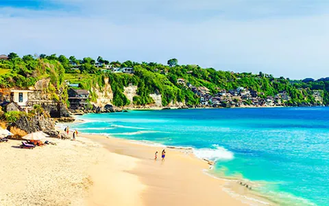
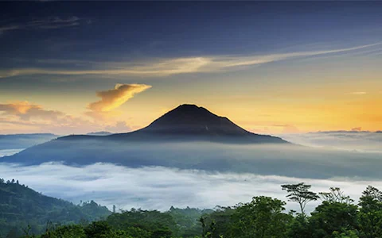
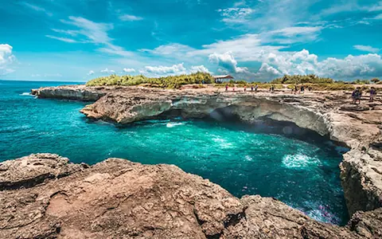
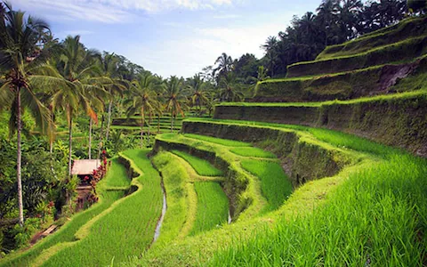

Kerala:


Rafting on Ayung River
Exhilarating Water Sport
The longest river in Bali at 75 kilometres, the scenic Ayung River meanders through lush tropical forests, valleys, rice fields, rocky outcrops, villages and waterfalls.

Climbing Mount Batur
Popular Sunrise Trek
Located in the Bangli region, Mount Batur stands at a height of 1,717 metres and is a popular trekking route during sunrise, owing to the spectacular views.


